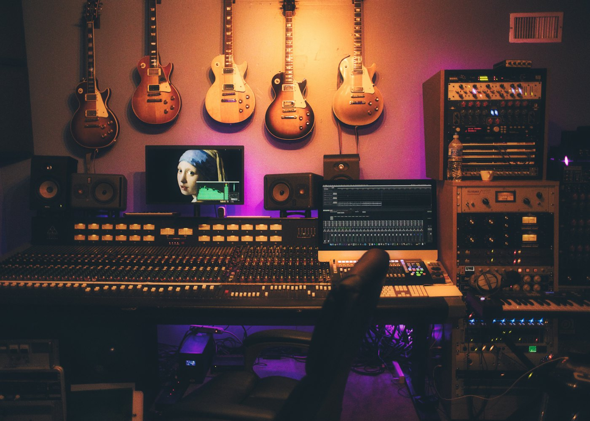

Kehancha Migori County Kenya
Sauti ya Jamii Yetu.
Connecting our community through music, news, conversations and entertainment.
Sauti inayotuunganisha, habari zinazotufikia, na burudani inayotukutanisha.
Radio Togotane 88.3 FM Kehancha, Migori, Kenya

Live radio
Tune in from the neighbourhood or from anywhere.
Radio Togotane 88.3 FM is the local station for Kehancha and the surrounding communities. Listen on a radio set, or press play on this site's live player.
- On the radio Tune to 88.3 FM in Kehancha and across Migori County.
- Online Press play to hear the station's online stream in this browser. If the feed is offline, the player says so instead of pretending to play.
- By phone Call the station on 0701 395 196 or 0728 506 650 to reach the team.
The station
A local voice for Kehancha and Migori County.
Radio Togotane 88.3 FM serves listeners in Kehancha and the surrounding communities, with programming for Migori County and for Kenyans listening from further afield. The station's published weekday schedule runs from 05:00 to midnight, with Saturday programming from 05:00.
Sunday programming is still being confirmed with the station.
More about the station- Frequency
- 88.3 FM
- Town
- Kehancha
- County
- Migori
- Country
- Kenya
Programme schedule
Every voice has its hour.
Five weekday programmes, from the first morning show to the last conversation of the night. Times are East Africa Time.
Sunday programming is being confirmed
The station has not yet published its Sunday schedule. Confirmed details will be added here, and will not be guessed in the meantime.
Contact the stationProgramme details follow the station's published schedule. Unless the player shows a live connection, this is not a confirmation that a presenter is on air.
Presenters
The voices behind the programmes.
Meet some of the people who host the station's weekday and Saturday programmes.
News and updates
What is happening around us.
Local news, community updates and public notices will be published here once the station's editorial team approves them.
Advertising and services
Let your business be heard.
Reach your community through Radio Togotane 88.3 FM. Contact the team to discuss advertising opportunities, sponsored programmes and announcements.
Community announcements
Share a notice with the community.
Condolences, lost and found items, meetings, church, school and public notices can be submitted for review. Announcements are checked by station staff before they are broadcast or published.
Submit an announcementEvents
No confirmed events yet.
Verified community events will be listed here once the station confirms the date, venue and contact details.
Tell us about an eventOfficial channels
Find the station online.
Facebook, YouTube and X — the accounts the station publishes itself.
Contact
Talk to the station.
Call, send a WhatsApp message or write to the team in Kehancha.